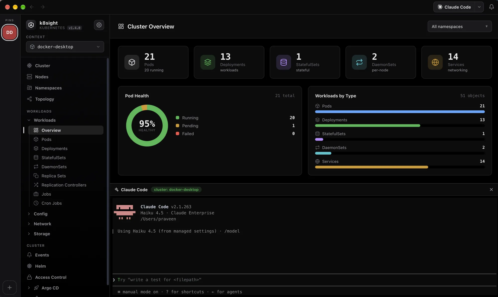
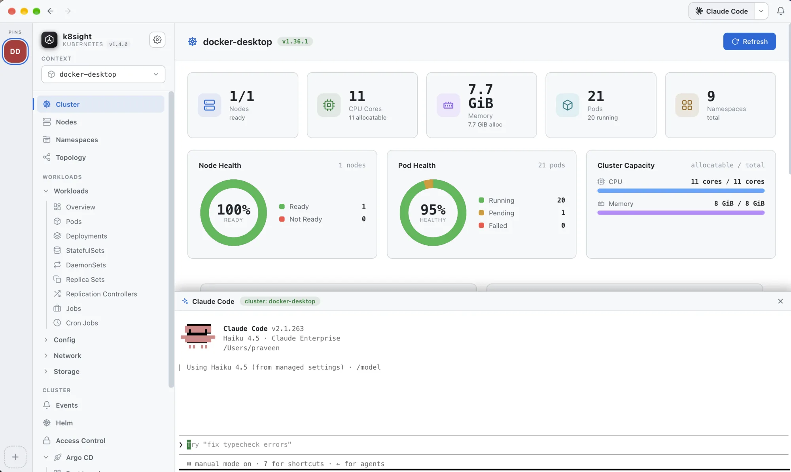

Bring your own LLM
An AI assistant that actually reads your cluster
Pick your model in the top toolbar and ask in plain English: “why is this pod not ready?” or “any warning events in kube-system?”. It runs an agentic tool-use loop over read-only cluster data and streams the answer back token by token.


How it works
Grounded in live data, and read-only
- Read-only by design: it can never modify your cluster; it shows you the
kubectlcommand when a change is needed. - Grounded in live data: calls tools like logs, events and describe to base every answer on your real cluster.
- Secrets redacted: secret values are stripped from tool output before anything reaches the API.
- Provider-agnostic: connects to any OpenAI-compatible endpoint (TrueFoundry, OpenAI, Azure, LiteLLM…) and stays aware of your current view.
Needs your own LLM subscription. The assistant ships with no built-in model. You connect an OpenAI-compatible API (TrueFoundry, OpenAI, Azure OpenAI, LiteLLM, …), which usually requires a paid account and API key. Your key is stored locally in
~/.config/k8s-manager/config.json. Everything else in the app works without it.
Assistantread-only · your model
Why is the checkout pod stuck in Pending?
get_events
describe_resource
list_nodes
The
checkout-7d9f pod is Pending because no node can satisfy its request of 2 CPU: all nodes are at capacity. Either scale the deployment down, add a node, or lower the CPU request. To inspect: kubectl describe pod checkout-7d9f.
Agent paneldocks like a terminal
➜ claude # running in ./deploy
▍scanning manifests for the checkout service…
● Found deployment.yaml requesting 2 CPU, reducing to 500m.
▍apply with
kubectl apply -f when ready.
Your terminal agents, docked
Run your favourite coding agent right beside the cluster
k8sight detects the coding agents already installed on your machine and opens them in a docked panel (same place as the pod terminal) so you can debug manifests and cluster state side by side. The top toolbar shows the chosen agent's own icon and name.
Claude Code
GitHub Copilot
Gemini CLI
Codex
opencode
Agents run as local processes using their own auth; k8sight just gives them a home next to your cluster.
More in k8sight
Explore the other features
Operations Live dashboard, every workload type, logs, a real shell, topology, Helm and port forwarding.
Cloud clusters Add EKS, AKS and GKE clusters to your kubeconfig with no cloud CLI.
Argo CD Applications, resource trees, sync and refresh, with no argocd CLI.
Security Center Image CVEs, config audits, RBAC checks and exposed secrets, powered by Trivy.
Costs Spend by namespace, workload and node from OpenCost or Kubecost.
See it on your own cluster
Free and open source for macOS, Windows and Linux. No cluster handy? The built-in demo works with nothing but the app.